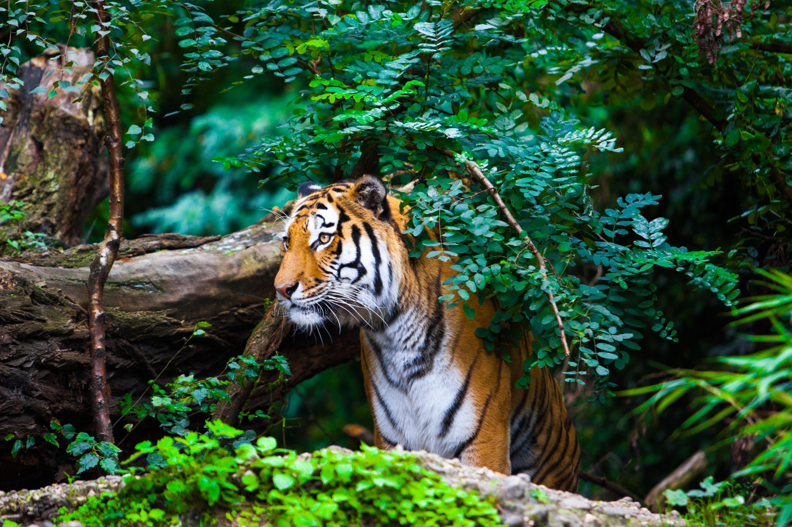
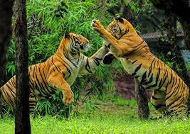
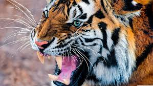
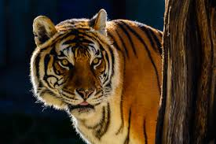

The Bengal tiger is the most numerous tiger subspecies and is primarily found in India. These powerful predators are known for their striking orange coat with black stripes, strong build, and keen hunting abilities.
Interesting Facts:
- Bengal tigers are the largest wild cats in the world, reaching up to 10 feet in length and weighing up to 600 pounds.
- They have an impressive ability to leap distances of up to 10 meters.
- Bengal tigers have a unique set of stripes, which are like fingerprints—no two tigers have the same pattern.
- They can consume up to 40 kilograms of meat in one sitting!
Habitat:
Bengal tigers inhabit diverse environments such as tropical rainforests, grasslands, and mangrove swamps. They prefer areas with dense vegetation and water sources, where they can easily stalk their prey.
Read More on WikipediaDiet
| Prey | Description |
|---|---|
| Deer | Primary prey, including sambar and chital deer. |
| Wild Boar | Often hunted when other prey is scarce. |
| Buffalo | Occasionally hunted, especially by larger males. |
| Fish | Sometimes caught in rivers and streams. |
Conservation Efforts
The Bengal tiger is classified as endangered due to habitat loss and poaching. Conservation organizations are working to protect these magnificent cats and their habitats.
Photo Gallery


